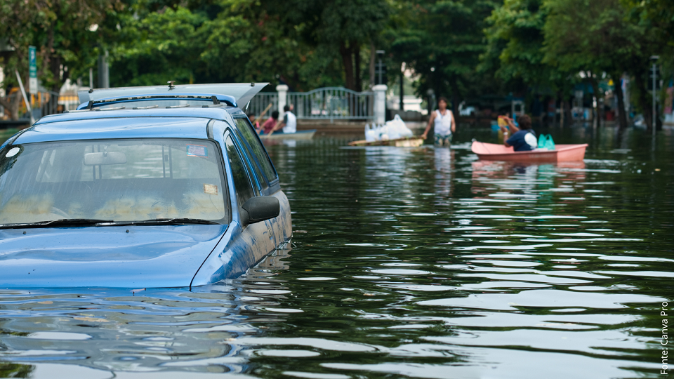

Não é exagero quando se fala que as enchentes transformaram diversas cidades do Rio Grande Sul em um cenário de guerra, é um acontecimento devastador que mexeu com todo Brasil. Não há quem não se comova com as imagens, os vídeos e as notícias.
As enchentes são eventos naturais extremos que podem causar danos significativos ao meio ambiente e às comunidades. É crucial estar preparado e consciente dos riscos associados.
 O episódio superou o recorde de 4,76 metros até então registado em 1941 quando o Lago Guaíba na grande Porto Alegre, e registrou uma elevação de 5,35 metros. Os diques, casas de bombas e comportas construídos em 1970 não foram capazes de segurar a água que invadiu quase toda a cidade! Mas por que isso aconteceu? Os acontecimentos tem um agravante ainda maior, segundo o Professor do Instituto de Hidráulica da UFRGS, Rodrigo Paiva, tudo aconteceu mais rápido, a população hoje é maior e as áreas de riscos ocupadas também são maiores do que em 1941 , ou seja, tudo contribuiu para que o impacto fosse maior (O GLOBO, 2024). Os intensos temporais são resultado da presença de uma massa de ar frio proveniente do sul (Argentina), que se estabeleceu sobre o Estado devido à influência de uma massa de ar seco e quente que se instalou no Centro do Brasil, essa mesma responsável pelas ondas de calor nos Estados do Centro-Oeste e Sudeste do país. Esse bloqueio tem impedido o avanço da massa de ar frio, resultando em uma região abaixo dela sujeita a intensa instabilidade e precipitação contínua, conforme explicam os meteorologistas da MetSul (ESTADÃO, 2024). A chuva semi-estacionária ocorreu em parte sobre a Serra e os Campos de Cima da Serra, áreas onde nascem grandes rios do Estado, como o Taquari e o Caí, que também testemunharam cheias históricas (ESTADÃO, 2024).Para mais informações, visite o site da Defesa Civil.